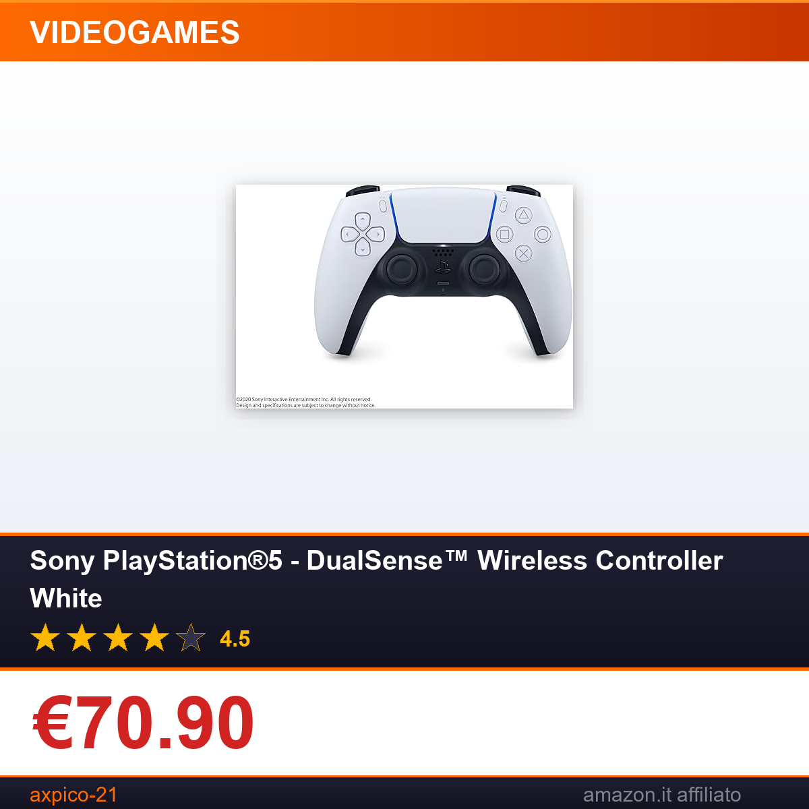

Sony PlayStation®5 - DualSense™ Wireless Controller White
⚠️ Il prezzo potrebbe variare. Verifica il prezzo aggiornato su Amazon prima di acquistare. In qualità di Affiliato Amazon ricevo un guadagno dagli acquisti idonei.
Se sei un appassionato di PlayStation 5, sai già quanto il controller DualSense sia centrale per l'esperienza di gioco: non è solo un accessorio di ricambio, ma un componente fondamentale che amplifica l'immersività di ogni titolo. Il modello bianco ufficiale Sony, oggi disponibile a un prezzo speciale su Amazon, è la scelta ideale sia per chi vuole un secondo controller per il multiplayer in casa, sia per chi ha bisogno di sostituire un dispositivo usato. Grazie alla qualità costruttiva di Sony, è un accessorio che dura nel tempo, resistendo anche all'uso più intensivo.
Caratteristiche principali
- Feedback aptico avanzato e grilletti adattivi: le vibrazioni calibrate e la resistenza variabile dei tasti L2/R2 rendono ogni azione in gioco più realistica, dal tiro di un arco alla guida di un'auto.
- Design ergonomico e finitura opaca bianca: si abbina perfettamente alla PS5, la superficie opaca riduce le impronte e garantisce una presa comoda anche in sessioni di gioco prolungate.
- Connettività versatile: funziona senza fili con PlayStation 5, ed è compatibile con PC Windows e dispositivi mobili selezionati per usarli con più piattaforme.
- Batteria ricaricabile integrata: si ricarica via cavo USB-C, elimina la necessità di pile e garantisce ore di gioco continuativo.
Prezzo e offerta
Il Sony PlayStation 5 DualSense Wireless Controller White è attualmente in offerta su Amazon a €70.90, un prezzo molto competitivo per un prodotto originale che vanta una valutazione di 4.5/5 basata sulle recensioni verificate degli utenti. Rispetto ai prezzi abituali di listino per i controller ufficiali Sony, questa promozione ti permette di risparmiare senza rinunciare alla qualità garantita dal marchio. È l'occasione ideale per chi cerca un secondo controller per il multiplayer in casa, un ricambio di riserva, o un regalo perfetto per un appassionato di videogiochi.
Non perdere questa offerta vantaggiosa: clicca sul link qui sotto per completare l'acquisto in pochi passaggi, con spedizione rapida e sicura.